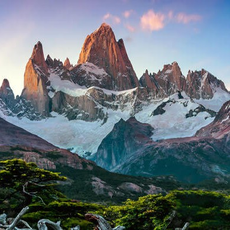

Argentina
Exploring the Diverse Wonders of South America's Crown Jewel
Argentina's sheer size and geographical variety have always fascinated me. As I set foot in Buenos Aires, the nation's vibrant capital, I couldn't help but feel a sense of awe and anticipation. From the urban buzz to the untouched wilderness, Argentina had it all.
My journey commenced in Buenos Aires, a city that pulses with energy day and night. I immersed myself in the sultry world of tango, taking lessons from local maestros and even daring to dance at the historic neighborhood of San Telmo's cobblestone streets. The dance's intricate steps and the intense connection between dancers left me spellbound. No exploration of Buenos Aires is complete without a culinary adventure. I dined at parrillas (steakhouses), savoring mouthwatering Argentinean beef, a culinary delight renowned worldwide. Each juicy bite was a testament to the country's ranching heritage, and I relished every moment.
From Buenos Aires, I embarked on a journey westward to Mendoza, a region cradled by the mighty Andes. The landscape transformed dramatically from the bustling city to the serene vineyards. Mendoza is Argentina's wine country, and wine enthusiasts like me are in for a treat. I spent days exploring the sprawling vineyards and participating in wine tasting tours. Sipping on Malbec, Argentina's flagship wine, while gazing at the snow-capped Andean peaks was a surreal experience. The wines' rich flavors and the backdrop of the mountains created a sensory symphony that I won't soon forget. I also took a hot air balloon ride over the vineyards, and the bird's-eye view was nothing short of breathtaking.
The thunderous roar of Iguazu Falls welcomed me to the lush rainforests of the north. With mist in the air and the verdant landscape all around, I felt like I'd stepped into a different world. Exploring the catwalks that lead to panoramic viewpoints, I was mesmerized by the spectacle of hundreds of waterfalls cascading into the emerald waters below. One of the most thrilling moments was a boat ride under the falls. The boat navigated the powerful currents, taking us as close to the falls as safety allowed. The experience was both exhilarating and humbling as we were engulfed by the mist and the deafening sound of the falls. I left Iguazu with a profound appreciation for the raw power of nature.
 Venturing south from the rainforests, I reached Bariloche, a town nestled in the Argentinean Andes. The Swiss-like chalets and pristine lakes made me feel like I'd stepped into a postcard. Bariloche is often referred to as the "Little Switzerland" of Argentina, and it's easy to see why. I hiked through the Nahuel Huapi National Park, taking in panoramic vistas of the Andes and enjoying picnics by pristine lakes. I also couldn't resist trying my hand at skiing on the nearby slopes during the winter months. The combination of stunning natural beauty and outdoor adventure made Bariloche a highlight of my Argentinean odyssey.
El Calafate, further south, was my gateway to the awe-inspiring Patagonian ice fields. Visiting the Perito Moreno Glacier was a high point of my journey. Witnessing the glacier's massive ice walls and hearing the thunderous crack as icebergs calved into the turquoise waters was awe-inspiring. I decided to take my exploration a step further by going on a glacier trek. Equipped with crampons and led by expert guides, I ventured onto the glacier itself. Walking among the crevasses, caves, and surreal blue ice formations was like entering another world. The sheer scale and beauty of the glacier left me in utter amazement.
My journey culminated in Ushuaia, known as the southernmost city in the world. Here, the windswept landscapes and the sense of being at the "End of the World" left an indelible mark on my soul. Ushuaia is a gateway to Antarctica, and the port buzzes with anticipation as travelers embark on expeditions to the frozen continent. I, too, explored the Beagle Channel, spotting penguins, sea lions, and even elusive orcas. The rugged beauty of Tierra del Fuego National Park, with its sub-Antarctic forests and windswept coastlines, provided an opportunity for further adventure. I hiked trails that offered breathtaking views of the Beagle Channel, and the sheer remoteness of the region was both humbling and invigorating.
As I concluded my adventure in Argentina, I couldn't help but marvel at the country's incredible diversity. From the passionate rhythms of Buenos Aires to the pristine wilderness of Patagonia, Argentina had exceeded all expectations. I hope this journey has ignited your wanderlust and given you a glimpse into the beauty and culture of this remarkable nation.
Join me on future escapades as we continue to uncover the treasures of the Americas. Until then, may your own adventures be filled with the magic and wonder of Argentina!